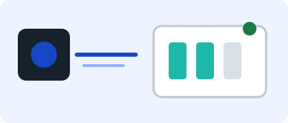
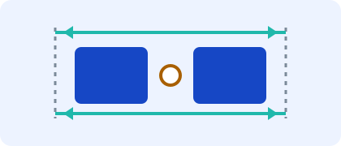
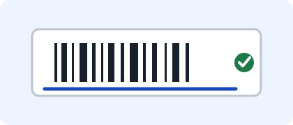

누락·오조립커넥터 누락·방향 검사
자동차 부품 조립자동차 부품 조립 공정
확인 조건 보기 →제조 공정 검사 솔루션
누락·외관·치수·코드 판독 문제부터 시작해 알맞은 제품 종류와 확인 조건을 보고, 같은 종류의 모델 차이를 비교합니다.
가상 기업·가상 제품을 사용한 개인 포트폴리오 프로젝트
문제로 찾기
검사해야 할 문제와 설치 조건을 확인하면 알맞은 제품 종류를 좁힐 수 있습니다.
제품 종류 찾기
제품을 고르는 순서선택 과정
가상 적용 예시

누락·오조립자동차 부품 조립자동차 부품 조립 공정
확인 조건 보기 →
치수·위치금속 가공 공정
확인 조건 보기 →
코드·문자포장·식별 공정
확인 조건 보기 →도입 전 확인
입력 내용은 저장하거나 실제 기업에 전송하지 않습니다.